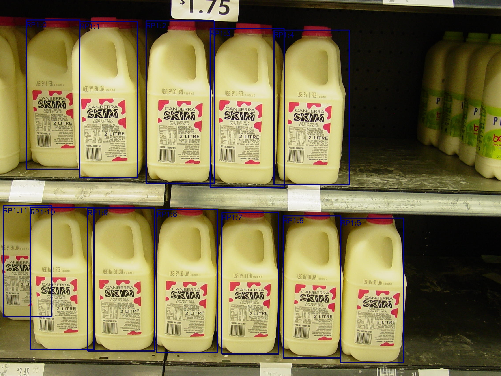
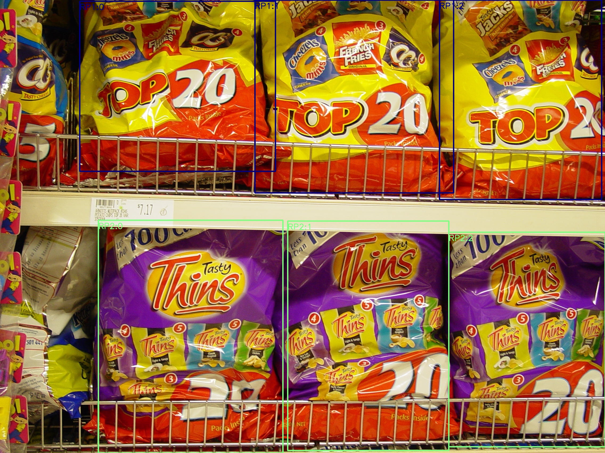
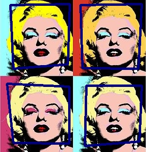
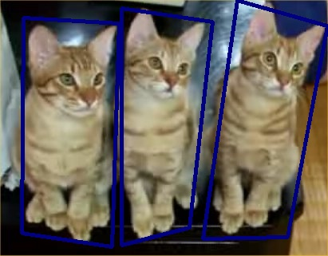

A Basic Introduction to Recurring Pattern
What is Recurring Pattern?
To answer this basic question, let's firstly take a look at some examples:




These milk bottles, chip bags, paintings, animals and even human beings share quite a lot in common.
Specifically, there are a series of **instances** which share similar appearance and geometric
properties in each image.
A **recurring pattern (RP)** is an ensemble of similar yet not necessarily identical **instances**
in an
image.
It is trivial to notice that any RP should contain **two or more instances**, otherwise a single
instance can hardly to tell similar or not.
Now let's give a definition:
A Recurring Pattern (RP) is an ensemble of similar yet not necessarily identical
"instances" in an
image.
The term of "instances" refers to a visual area which distinctive features that could be
undoubtedly grouped or segmented together. Each recurring pattern consists of two or more
similar
instances.